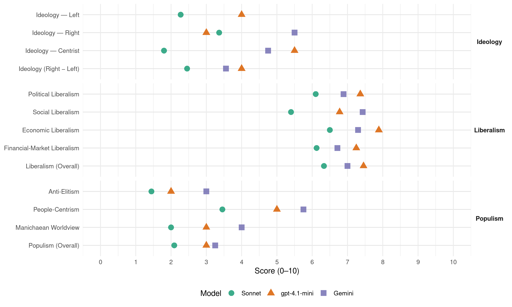

AKP (Turkey, 2018)
manifesto_id 74628_201806
Get full text: This site shows derived annotations and short verbatim quotes only. The full manifesto text is © Manifesto Project / WZB — obtain it via manifesto-project.wzb.eu using the manifesto_id above.
Headline scores
| Dimension | Sonnet | gpt-4.1-mini | Gemini |
|---|---|---|---|
| Populism (Overall) | 2.1 | 3.0 | 3.2 |
| Anti-Elitism | 1.4 | 2.0 | 3.0 |
| People-Centrism | 3.5 | 5.0 | 5.8 |
| Manichaean Worldview | 2.0 | 3.0 | 4.0 |
| Ideology (Right − Left) | 2.5 | 4.0 | 3.6 |
| Liberalism (Overall) | 6.3 | 7.5 | 7.0 |
| Political Liberalism | 6.1 | 7.4 | 6.9 |
| Social Liberalism | 5.4 | 6.8 | 7.4 |
| Economic Liberalism | 6.5 | 7.9 | 7.3 |
| Financial-Market Liberalism | 6.1 | 7.2 | 6.7 |
Evidence per dimension
Economic Liberalism
Gemini · score 8.0 · verified · chunk 1
“rekabetçi, serbest piyasayı esas alan”
geçici rüzgârlara kapılmayıp dışa açık, rekabetçi, serbest piyasayı esas alan ekonomik yapımızı güçlendirerek
Gemini · score 6.0 · verified · chunk 2
“özel sektörün rolünü güçlendirecek, odalar”
Özellikle mesleki eğitimde özel sektörün rolünü güçlendirecek, odalar ve borsalara daha fazla sorumluluk vereceğiz.
Gemini · score 6.0 · verified · chunk 3
“ilaç fiyatlandırma sistemini değiştirdik”
KDV oranını düşürdük ve ilaç fiyatlandırma sistemini değiştirdik. İlaç fiyatlarında önemli oranda indirim sağlayarak
Gemini · score 8.0 · verified · chunk 4
“piyasaların rekabetçi bir ortamda serbestçe”
herkes için kurallı bir ekonomi anlayışıyla piyasaların rekabetçi bir ortamda serbestçe işleyişini sağladık.
Gemini · score 9.0 · verified · chunk 5
“piyasaların rekabetçi bir ortamda serbestçe”
Herkes için kurallı bir ekonomi anlayışıyla piyasaların rekabetçi bir ortamda serbestçe işleyişini sağladık.
Gemini · score 8.0 · verified · chunk 6
“teşebbüs hürriyetinin ve serbest girişimcinin her daim yanındayız”
Girişimcilik ve KOBİ’ler AK Parti olarak kuruluş felsefemiz gereği teşebbüs hürriyetinin ve serbest girişimcinin her daim yanındayız. Partimizin büyüme stratejisi girişimciliği ve özel sektör öncülüğünde dinamik bir yapıyı esas almaktadır.
Gemini · score 4.0 · mixed · chunk 7
“üretim ve dağıtım tesislerinin özelleştirilmesine önem verdik”
kaynaklarının çeşitlendirilmesine, yerli ve yenilenebilir enerji kaynaklarına, üretim ve dağıtım tesislerinin özelleştirilmesine önem verdik. 2002-2017 yılları arasında
Gemini · score 8.0 · verified · chunk 8
“Elektronik haberleşme sektörünü 2004 yılında rekabete açtık”
kamu bilgi ve iletişim teknolojisi yatırımlarına öncelik verdik ve bu alandaki yatırımları hızlı bir şekilde artırdık. Elektronik haberleşme sektörünü 2004 yılında rekabete açtık. Elektronik haberleşme alanında sağlanan serbestleşme
Gemini · score 6.0 · verified · chunk 9
“Piyasa gözetim ve denetim sistemlerini”
81 ilin kırsal yerleşmeleri için tamamlayacağız. Piyasa gözetim ve denetim sistemlerini iyileştireceğiz. Yapı Kayıt
Gemini · score 7.0 · verified · chunk 10
“özel sektörün dış yatırımları ile sivil toplum”
kamu sektörü tarafından yapılan yardım faaliyetlerine ilave olarak, özel sektörün dış yatırımları ile sivil toplum kuruluşlarının faaliyetleri
Gemini · score 7.0 · verified · chunk 11
“kamu-özel işbirliği modelinin kullanılması”
etmekte olup yapım aşamasında proje finansmanı için kamu-özel işbirliği modelinin kullanılması planlanmaktadır. Kanal İstanbul Projesi
gpt-4.1-mini · score 8.0 · verified · chunk 1
“dışa açık, rekabetçi, serbest piyasayı esas alan ekonomik yapımızı güçlendirerek devam ettireceğiz”
…Korumacılık eğiliminin küresel düzeyde yükseldiği bir ortamda geçici rüzgârlara kapılmayıp dışa açık, rekabetçi, serbest piyasayı esas alan ekonomik yapımızı güçlendirerek devam ettireceğiz.
gpt-4.1-mini · score 7.0 · verified · chunk 3
“Kadın istihdamını güçlü ve çeşitli teşvik mekanizmaları ile destekledik”
Kadın istihdamını güçlü ve çeşitli teşvik mekanizmaları ile destekledik. Kadınların istihdamını teşvik amacıyla işveren sigorta prim payını belirli oranlarda karşıladık. 2011 yılında 6111 sayılı kanun ile kadınlara pozitif ayrımcılık yapılarak, kadınların 18 yaşından itibaren çalışmaya başlamaları halinde belli koşullara bağlı olarak, 12 ile 48 ay süresince sigorta primlerinin, işveren hisselerinin İşsizlik Sigortası Fonu’ndan karşılanacağı hususunu düzenledik.
gpt-4.1-mini · score 8.0 · verified · chunk 4
“piyasaların rekabetçi bir ortamda serbestçe işleyişini sağladık”
Herkes için kurallı bir ekonomi anlayışıyla piyasaların rekabetçi bir ortamda serbestçe işleyişini sağladık. Güven ve istikrarın yanı sıra ekonomi politikalarımızda şeffaflık, tutarlılık ve öngörülebilirlik ilkelerini hayat geçirdik.
gpt-4.1-mini · score 9.0 · verified · chunk 5
“serbest, dışa açık ve dünyayla entegre bir yapıyla yatırım ortamının daha da iyileştirilmesini amaçlıyoruz”
AK Parti olarak ekonomide güven ve istikrarın korunması, serbest, dışa açık ve dünyayla entegre bir yapıyla yatırım ortamının daha da iyileştirilmesini amaçlıyoruz. Önümüzdeki dönemde de ekonomik büyümeyi bu anlayışımızdan taviz vermeden sürdüreceğiz.
gpt-4.1-mini · score 8.0 · verified · chunk 6
“Yatırım teşvik sistemimizi dinamik hale getirerek, yatırımların nitelik ve değerini artıracak yeni teşvikler geliştirdik”
Yatırım teşvik sistemimizi dinamik hale getirerek, yatırımların nitelik ve değerini artıracak yeni teşvikler geliştirdik. 2002 ile 2017 yılları arasında özel sektör yatırımlarına yönelik teşviklerimizi sürekli geliştirdik.
gpt-4.1-mini · score 8.0 · verified · chunk 7
“Elektronik haberleşme sektörünü 2004 yılında rekabete açtık”
Elektronik haberleşme sektörünü 2004 yılında rekabete açtık. Elektronik haberleşme alanında sağlanan serbestleşme sonucunda oluşan rekabet ortamı ile 2003 yılında neredeyse hiç olmayan geniş bant abone sayısı, bugün 69 milyona yaklaştı.
gpt-4.1-mini · score 8.0 · verified · chunk 8
“sektörü serbestleştirdik”
Havacılık alanında yaptığımız düzenlemeler ile sektörü serbestleştirdik. Birçok ilimizde inşa ettiğimiz yeni hava limanları ve mevcut hava limanlarında yaptığımız modern terminallerle sektörün hızla büyümesini sağladık.
gpt-4.1-mini · score 7.0 · verified · chunk 9
“ticareti ve uluslararası doğrudan yatırımları artırarak ekonomik refahımızı ileriye taşımakta”
…Dış politikada elde ettiğimiz kazanımlar, öncelikli olarak ticareti ve uluslararası doğrudan yatırımları artırarak ekonomik refahımızı ileriye taşımakta ve karşılıklı etkileşime dayalı olarak sosyal gelişimimizi beslemektedir. Elde ettiğimiz diplomatik başarılar, artan uluslararası ilişkiler, ülkemiz için ticaret ve finans başta olmak üzere her alanda yeni işbirliği imkânları yaratmakta…
gpt-4.1-mini · score 8.0 · verified · chunk 11
“yollarımızın kalitesi yükselecek, zaman tasarrufu artacak”
Tüm bu projelerin hayata geçmesi ile yollarımızın kalitesi yükselecek, zaman tasarrufu artacak, ekonomik ve ticari faaliyetler için alt yapımız güçlenecektir.
Sonnet · score 7.0 · verified · chunk 1
“dışa açık, rekabetçi, serbest piyasayı esas alan”
Korumacılık eğiliminin küresel düzeyde yükseldiği bir ortamda geçici rüzgârlara kapılmayıp dışa açık, rekabetçi, serbest piyasayı esas alan ekonomik yapımızı güçlendireceğiz.
Sonnet · score 6.0 · verified · chunk 2
“özel sektörün rolünü güçlendirecek”
özellikle mesleki eğitimde özel sektörün rolünü güçlendirecek, odalar ve borsalara daha fazla sorumluluk vereceğiz
Sonnet · score 5.0 · verified · chunk 3
“kamu-özel iş birliği ile Şehir Hastaneleri”
fonksiyonel ve modern mimari anlayışa sahip sağlık tesisleri inşa ederek vatandaşlarımıza yüksek standartlarda sağlık hizmeti sunumunu sağlamak amacıyla kamu-özel iş birliği ile Şehir Hastaneleri projelerini hayata geçirdik
Sonnet · score 7.0 · verified · chunk 4
“serbest, dışa açık ve dünyayla entegre bir yapıyla”
AK Parti olarak ekonomide güven ve istikrarın korunması, serbest, dışa açık ve dünyayla entegre bir yapıyla yatırım ortamının daha da iyileştirilmesini amaçlıyoruz.
Sonnet · score 8.0 · verified · chunk 5
“serbest, dışa açık ve dünyayla entegre bir yapıyla”
AK Parti olarak ekonomide güven ve istikrarın korunması, serbest, dışa açık ve dünyayla entegre bir yapıyla yatırım ortamının daha da iyileştirilmesini amaçlıyoruz.
Sonnet · score 8.0 · verified · chunk 6
“Kurumlar vergisi oranını yüzde 33’ten yüzde 20’ye indirdik”
Bu kapsamda; Kurumlar vergisi oranını yüzde 33’ten yüzde 20’ye indirdik. (Geçici olarak yüzde 22 düzeyindedir.)
Sonnet · score 5.0 · mixed · chunk 7
“üretim ve dağıtım tesislerinin özelleştirilmesine önem verdik”
enerji kaynaklarının çeşitlendirilmesine, yerli ve yenilenebilir enerji kaynaklarına, üretim ve dağıtım tesislerinin özelleştirilmesine önem verdik.
Sonnet · score 7.0 · verified · chunk 8
“sektörü serbestleştirdik”
Havacılık alanında yaptığımız düzenlemeler ile sektörü serbestleştirdik. Birçok ilimizde inşa ettiğimiz yeni hava limanları
Sonnet · score 6.0 · verified · chunk 9
“girişimciliğin desteklenmesine, kentsel standartların”
Orta gelişmişlik düzeyindeki illerde; girişimciliğin desteklenmesine, kentsel standartların geliştirilmesine, şehir imajının güçlendirilmesine, beşeri ve sosyal sermayenin geliştirilmesine ağırlık vereceğiz.
Sonnet · score 5.0 · verified · chunk 10
“Türk firmalarının ve işadamlarının Afrika pazarında”
Türk firmalarının ve işadamlarının Afrika pazarında etkin hale gelebilmeleri ve pazar payını arttırmaları için sarf ettiğimiz gayretler
Sonnet · score 6.0 · verified · chunk 11
“Yap-İşlet-Devret yöntemiyle ihalesi”
Yap-İşlet-Devret yöntemiyle ihalesi 2017 yılında yapılan projenin inşaat çalışması devam etmekte olup
Financial-Market Liberalism
Gemini · score 7.0 · verified · chunk 1
“Finansal piyasalarda güven, istikrar ve şeffaflığın”
Kamuda hesap verme sorumluluğunu artırdık. Finansal piyasalarda güven, istikrar ve şeffaflığın sağlanmasını, kredi sisteminin
Gemini · score 7.0 · verified · chunk 4
“finansal piyasalardaki derinleşmeyi artıracak”
mali disiplini sürdürürken diğer taraftan finansal piyasalardaki derinleşmeyi artıracak, enflasyonu tek hanelere düşürecek
Gemini · score 8.0 · verified · chunk 5
“finansal piyasalardaki derinleşmeyi artıracak, enflasyonu”
diğer taraftan finansal piyasalardaki derinleşmeyi artıracak, enflasyonu tek hanelere düşürecek ve cari açığı
Gemini · score 7.0 · verified · chunk 6
“altyapı yatırımlarına sermaye piyasaları aracılığıyla fon aktarılmasına”
KÖİ yöntemiyle yapılanlar başta olmak üzere altyapı yatırımlarına sermaye piyasaları aracılığıyla fon aktarılmasına odaklanacak, finansal araç çeşitliliğinin artırılması ve kurumsal yatırımcılar aracılığıyla fon aktarımına öncelik vereceğiz.
Gemini · score 6.0 · verified · chunk 7
“Ziraat Bankası kredi olanaklarıyla”
hayvan varlığını artırmak amacıyla, Ziraat Bankası kredi olanaklarıyla şartları uygun olan yetiştiricilere
Gemini · score 6.0 · verified · chunk 9
“bölgesel girişim sermayesi modeli ve”
girişimcileri desteklemek için bölgesel girişim sermayesi modeli ve mevzuatının hazırlıklarını yürütüyoruz.
Gemini · score 6.0 · verified · chunk 10
“IMF, Dünya Bankası ve diğer uluslararası finans”
politikalarımızı devam ettireceğiz. IMF, Dünya Bankası ve diğer uluslararası finans kuruluşlarıyla ilişkilerimizin ülkemizin çıkarları doğrultusunda
gpt-4.1-mini · score 7.0 · verified · chunk 1
“Bankacılık Kanununu çıkardık. Doğrudan Yabancı Yatırımlar Kanunuyla yapılan düzenleme ile yatırımcıların ihtiyaç ve beklentilerini dikkate alan; açık, anlaşılır ve şeffaf bir doğrudan yatırım mevzuatı oluşturduk”
…Saydamlığın Artırılması ve Yolsuzlukla Mücadelenin Güçlendirilmesi Stratejisini uygulamaya koyduk. … Bankacılık Kanununu çıkardık. Doğrudan Yabancı Yatırımlar Kanunuyla yapılan düzenleme ile yatırımcıların ihtiyaç ve beklentilerini dikkate alan; açık, anlaşılır ve şeffaf bir doğrudan yatırım mevzuatı oluşturduk.
gpt-4.1-mini · score 7.0 · verified · chunk 4
“sahip olduğumuz sağlam finansal sistem sayesinde, küresel kriz ortamında birçok ülkeye kıyasla pozitif yönde ayrışmıştır”
Türkiye ekonomisi, oluşturduğumuz mali alanın da katkısıyla, doğru ve zamanında uyguladığımız makroekonomik politikalara ek olarak, sahip olduğumuz sağlam finansal sistem sayesinde, küresel kriz ortamında birçok ülkeye kıyasla pozitif yönde ayrışmıştır.
gpt-4.1-mini · score 8.0 · verified · chunk 5
“bankacılık sistemimizi güçlendirdik, ekonomiye ve büyümeye katkısını artırdık”
Yaptığımız reformların sonucunda, bankacılık sistemimizi güçlendirdik, ekonomiye ve büyümeye katkısını artırdık. Bankacılık sektöründeki aktiflerin GSYH’ya oranı, 2002 yılındaki yüzde 59 seviyesinden, 2017 yılı sonu itibarıyla yüzde 105’e ulaşmıştır.
gpt-4.1-mini · score 7.0 · verified · chunk 6
“Uluslararası doğrudan yatırımlar 1975-2001 döneminde 14 milyar dolar seviyesindeyken, 2002–2017 döneminde kümülatif olarak yaklaşık 14 kat artarak 194,3 milyar dolara ulaşmıştır”
Yatırım ortamını iyileştirme çalışmaları ile ülkemize daha fazla doğrudan yabancı yatırım çektik. Uluslararası doğrudan yatırımlar 1975-2001 döneminde 14 milyar dolar seviyesindeyken, 2002–2017 döneminde kümülatif olarak yaklaşık 14 kat artarak 194,3 milyar dolara ulaşmıştır.
Sonnet · score 6.0 · verified · chunk 1
“kredi sisteminin etkin bir şekilde çalışmasını”
Finansal piyasalarda güven, istikrar ve şeffaflığın sağlanmasını, kredi sisteminin etkin bir şekilde çalışmasını ve tasarruf sahiplerinin hak ve menfaatlerinin korunmasını sağlamak amacıyla Bankacılık Kanununu çıkardık.
Sonnet · score 7.0 · verified · chunk 4
“finansal piyasalardaki derinleşmeyi artıracak”
bir taraftan mali disiplini sürdürürken diğer taraftan finansal piyasalardaki derinleşmeyi artıracak, enflasyonu tek hanelere düşürecek
Sonnet · score 8.0 · verified · chunk 5
“Sermaye piyasalarımızı yeni araçlarla derinleştirecek”
Katılım bankacılığını daha da aktif hale getirerek, kaynak yapısının güçlendirilmesini teşvik edeceğiz. Sermaye piyasalarımızı yeni araçlarla derinleştirecek, işletmelerimizin sermaye piyasalarını daha aktif kullanmalarını sağlayacağız.
Sonnet · score 7.0 · verified · chunk 6
“sermaye piyasaları aracılığıyla fon aktarılmasına”
altyapı yatırımlarına sermaye piyasaları aracılığıyla fon aktarılmasına odaklanacak, finansal araç çeşitliliğinin artırılması ve kurumsal yatırımcılar aracılığıyla fon aktarımına öncelik vereceğiz
Sonnet · score 5.0 · verified · chunk 7
“Ziraat Bankasında yüzde 59 olan tarımsal kredi faiz oranlarını”
2002 yılında Ziraat Bankasında yüzde 59 olan tarımsal kredi faiz oranlarını, 2006 yılından itibaren kredi konusuna bağlı olarak yüzde 0 ile yüzde 8,25 arasında uyguladık.
Sonnet · score 5.0 · verified · chunk 8
“özel sektör firmalarının da posta hizmetlerini”
PTT’nin yanında özel sektör firmalarının da posta hizmetlerini yasal olarak sunabilmelerinin önünü açtık.
Sonnet · score 5.0 · verified · chunk 9
“ticaret ve finans başta olmak üzere”
elde ettiğimiz diplomatik başarılar, artan uluslararası ilişkiler, ülkemiz için ticaret ve finans başta olmak üzere her alanda yeni işbirliği imkânları yaratmaktadır
Sonnet · score 6.0 · verified · chunk 11
“kamu-özel işbirliği modelinin kullanılması”
yapım aşamasında proje finansmanı için kamu-özel işbirliği modelinin kullanılması planlanmaktadır.
Political Liberalism
Gemini · score 7.0 · verified · chunk 1
“bağımsız ve tarafsız yargı daha etkin”
Meclis daha itibarlı, Hükümet daha güçlü, bağımsız ve tarafsız yargı daha etkin olacaktır.
Gemini · score 7.0 · verified · chunk 2
“demokrasi hukuk devleti ve adalet gibi”
Değerlerimize sahip çıkan, demokrasi hukuk devleti ve adalet gibi değerlere vurgu yapan yepyeni bir müfredat hazırladık.
Gemini · score 7.0 · verified · chunk 3
“demokratik ve bilimsel eğitim zeminlerini”
eğitimin her kademesinde ve üniversitelerde gençlerimizin demokratik ve bilimsel eğitim zeminlerini daha da güçlendirecek, özgürlüklerini geliştirmeye devam
Gemini · score 7.0 · verified · chunk 4
“iyi işleyen bir demokrasi ile”
sürdürülebilir bir ekonomik kalkınmanın ancak iyi işleyen bir demokrasi ile mümkün olabileceği anlayışıyla hareket
Gemini · score 8.0 · verified · chunk 5
“iyi işleyen bir demokrasi ile mümkün”
sürdürülebilir bir ekonomik kalkınmanın ancak iyi işleyen bir demokrasi ile mümkün olabileceği anlayışıyla hareket ettik.
Gemini · score 7.0 · verified · chunk 6
“Hukuk Muhakemeleri Kanununu yürürlüğe koyduk”
Hukuki süreçlerin iş ortamını kolaylaştırmasını sağladık. Yargı sürecinin hızlanması, yatırımcılar için büyük önem arz eden tahkimin ülkemizde yaygınlaştırılması ve tahkim kültürünün yerleştirilmesine yönelik düzenlemeleri içeren Hukuk Muhakemeleri Kanununu yürürlüğe koyduk.
Gemini · score 5.0 · verified · chunk 8
“demokratik yönetim ve hesap verilebilirliği artırmak”
idarelerin kurumsal kapasitesini geliştirmek, hizmet standartlarını belirlemek, demokratik yönetim ve hesap verilebilirliği artırmak amacıyla Hizmet Envanteri Yönetim sistemi
Gemini · score 7.0 · verified · chunk 9
“hukukun üstünlüğü ilkesi ışığında”
temel haklarını korumak için, şeffaflık içinde ve hukukun üstünlüğü ilkesi ışığında aldığımız OHAL tedbirlerine
Gemini · score 7.0 · verified · chunk 10
“demokratikleşme, insan hakları ve itibarlı dış politikayı”
büyüyen bir Türkiye inşa ederken, demokratikleşme, insan hakları ve itibarlı dış politikayı tesis etme yolunda da tarihi adımlar
gpt-4.1-mini · score 8.0 · verified · chunk 1
“Cumhurbaşkanlığı Hükümet sistemiyle birlikte yürütme erkinin kendi içerisindeki fonksiyonları derli toplu ve etkili bir nitelik kazanırken, kuvvetler ayrılığı prensibi daha sağlıklı bir şekilde uygulanma zemini bulacaktır”
…Cumhurbaşkanlığı Hükümet sistemiyle birlikte yürütme erkinin kendi içerisindeki fonksiyonları derli toplu ve etkili bir nitelik kazanırken, kuvvetler ayrılığı prensibi daha sağlıklı bir şekilde uygulanma zemini bulacaktır. Yürütmenin daha bütüncül bir yapıyla daha hızlı ve kaliteli hizmet vermesine dayalı yeni yönetim modelinde güçlü bir Meclis yasama faaliyetlerini daha iyi yaparak yürütme üzerindeki sorumluluklarını yerine getirirken, bağımsız ve tarafsız yargı vatandaşlarımızın adil ve etkin bir şekilde adalet hizmeti alabilmesinin hukuki zeminini oluşturacaktır.
gpt-4.1-mini · score 8.0 · verified · chunk 2
“güçlü bir demokrasi hedefine ulaşmak amacıyla temel hak ve özgürlüklerin garanti altına alınabilmesi”
Bu yaklaşımla güvenlik hizmetlerini, güçlü bir demokrasi hedefine ulaşmak amacıyla temel hak ve özgürlüklerin garanti altına alınabilmesi ve eksiksiz bir biçimde kullanılabilmesi için ihtiyaç duyulan temel kamu hizmeti olarak tanımlamaktayız.
gpt-4.1-mini · score 7.0 · verified · chunk 3
“Anayasa’da kadınlara yönelik “Pozitif Ayrımcılık” ilkesini getirdik”
Türk Ceza Kanunu’nda toplumsal cinsiyet eşitliği ve kadına karşı şiddet konusunda düzenleme yaptık. Anayasa’da kadınlara yönelik “Pozitif Ayrımcılık” ilkesini getirdik. “Ailenin Korunması ve Kadına Yönelik Şiddet” in önlenmesine dair 6284 Sayılı Kanunu çıkardık.
gpt-4.1-mini · score 8.0 · verified · chunk 4
“sürdürülebilir bir ekonomik kalkınmanın ancak iyi işleyen bir demokrasi ile mümkün olabileceği anlayışıyla hareket ettik”
Parti olarak başından beri sürdürülebilir bir ekonomik kalkınmanın ancak iyi işleyen bir demokrasi ile mümkün olabileceği anlayışıyla hareket ettik. Bunun için haklar ve özgürlüklerin korunması ve geliştirilmesinin, hukukun tüm kurum ve kurallarıyla işlemesinin piyasa ekonomisi için vazgeçilmez olduğu bilinciyle politikalarımızı oluşturduk.
gpt-4.1-mini · score 8.0 · verified · chunk 5
“hukukun tüm kurum ve kurallarıyla işlemesinin piyasa ekonomisi için vazgeçilmez olduğu bilinciyle politikalarımızı oluşturduk”
Parti olarak başından beri sürdürülebilir bir ekonomik kalkınmanın ancak iyi işleyen bir demokrasi ile mümkün olabileceği anlayışıyla hareket ettik. Bunun için haklar ve özgürlüklerin korunması ve geliştirilmesinin, hukukun tüm kurum ve kurallarıyla işlemesinin piyasa ekonomisi için vazgeçilmez olduğu bilinciyle politikalarımızı oluşturduk.
gpt-4.1-mini · score 7.0 · verified · chunk 6
“Yargı sürecinin hızlanması, yatırımcılar için büyük önem arz eden tahkimin ülkemizde yaygınlaştırılması”
Hukuki süreçlerin iş ortamını kolaylaştırmasını sağladık. Yargı sürecinin hızlanması, yatırımcılar için büyük önem arz eden tahkimin ülkemizde yaygınlaştırılması ve tahkim kültürünün yerleştirilmesine yönelik düzenlemeleri içeren Hukuk Muhakemeleri Kanununu yürürlüğe koyduk.
gpt-4.1-mini · score 6.0 · verified · chunk 7
“Evrensel Hizmet Kanununu yürürlüğe koyduk”
2005 yılında Evrensel Hizmet Kanununu yürürlüğe koyduk. Bu çerçevede, sayısal uçurumun önüne geçmeye ve tüm vatandaşlarımıza temel hizmetleri ulaştırmaya dönük çalışmalar yürütüyoruz.
gpt-4.1-mini · score 7.0 · verified · chunk 8
“demokrasi yerelde başladığı inancı oldu”
temel dayanağımız yerel yönetimlerin kalkınmanın motoru olduğu ve demokrasinin yerelde başladığı inancı oldu. Biz yerel yönetimlerin kalkınmanın öncüsü olduğuna inanıyoruz.
gpt-4.1-mini · score 7.0 · verified · chunk 9
“OHAL İşlemlerini İnceleme Komisyonu’nu teşkil ettik”
…şeffaflık içinde ve hukukun üstünlüğü ilkesi ışığında aldığımız OHAL İşlemlerini İnceleme Komisyonu’nu teşkil ettik. Komisyonun, Avrupa İnsan Hakları Mahkemesi tarafından bir iç hukuk yolu olarak tanınmasını sağladık. Ülkemizin, temel hak ve özgürlüklerin korunması bakımından uluslararası standartlar ile uyumlu bir iç hukuk oluşturma anlayışıyla 2016- 2018 döneminde 16 Avrupa Konseyi Sözleşmesini onayladık…
gpt-4.1-mini · score 8.0 · verified · chunk 10
“AGİT nezdinde başta Avrupa İnsan Hakları Sözleşmesi olmak üzere temel hak ve özgürlükleri ihtiva eden diğe r sözleşmelere uyum sağlayacak şekilde mevzuat ve uygulamalarımızı iyileştirmeye devam edeceğiz”
…NATO’nun, gerek askeri gerek siyasi etkinliğinin daha da güçlendirilmesine ve ülkemizin dışarıdan kaynaklanan tehditlere karşı savunulmasına katkı sağlamasına yönelik çalışmaları bugüne kadar olduğu gibi, bundan sonra da destekleyeceğiz. AGİT nezdinde başta Avrupa İnsan Hakları Sözleşmesi olmak üzere temel hak ve özgürlükleri ihtiva eden diğe r sözleşmelere uyum sağlayacak şekilde mevzuat ve uygulamalarımızı iyileştirmeye devam edeceğiz. İşkenceye karşı sıfır tolerans politikamız ışığında, Avrupa Konseyi’nin bu alandaki mekanizmalarıyla yakın işbirliğini sürdüreceğiz…
gpt-4.1-mini · score 7.0 · verified · chunk 11
“e-Devlet Kapısı, aylık ortalama 200 milyon kullanıma ulaşmıştır”
Halihazırda 449 kamu kurumuna ait 3.220 adet kamu hizmetinin sunulduğu, 37,5 milyon kayıtlı kullanıcıya sahip e-Devlet Kapısı, aylık ortalama 200 milyon kullanıma ulaşmıştır. 2023 yılına kadar da tüm kamu hizmetlerinin e-Devlet Kapısı üzerinden verilmesi hedeflenmektedir.
Sonnet · score 7.0 · verified · chunk 1
“kuvvetler ayrılığı prensibi daha sağlıklı”
kuvvetler ayrılığı prensibi daha sağlıklı bir şekilde uygulanma zemini bulacaktır.
Sonnet · score 7.0 · verified · chunk 2
“güçlü bir demokrasi hedefine ulaşmak amacıyla”
güvenlik hizmetlerini, güçlü bir demokrasi hedefine ulaşmak amacıyla temel hak ve özgürlüklerin garanti altına alınabilmesi
Sonnet · score 6.0 · verified · chunk 3
“Seçilme yaşını 25’ten 18’e düşürdük”
Gençliğin karar alma mekanizmalarına daha erken katılmasını sağladık. Seçilme yaşını 25’ten 18’e düşürdük. Profesyonel orduya geçişle uyumlu olarak zorunlu askerlik süresini 18 aydan 12 aya
Sonnet · score 7.0 · verified · chunk 4
“iyi işleyen bir demokrasi ile mümkün olabileceği”
sürdürülebilir bir ekonomik kalkınmanın ancak iyi işleyen bir demokrasi ile mümkün olabileceği anlayışıyla hareket ettik. Bunun için haklar ve özgürlüklerin korunması
Sonnet · score 7.0 · verified · chunk 5
“iyi işleyen bir demokrasi ile mümkün olabileceği”
sürdürülebilir bir ekonomik kalkınmanın ancak iyi işleyen bir demokrasi ile mümkün olabileceği anlayışıyla hareket ettik. Bunun için haklar ve özgürlüklerin korunması ve geliştirilmesinin, hukukun tüm kurum ve kurallarıyla işlemesinin piyasa ekonomisi için vazgeçilmez olduğu bilinciyle
Sonnet · score 5.0 · verified · chunk 6
“tahkimin ülkemizde yaygınlaştırılması”
yatırımcılar için büyük önem arz eden tahkimin ülkemizde yaygınlaştırılması ve tahkim kültürünün yerleştirilmesine yönelik düzenlemeleri içeren Hukuk Muhakemeleri Kanununu yürürlüğe koyduk
Sonnet · score 5.0 · verified · chunk 7
“Elektronik haberleşme sektörünü 2004 yılında rekabete açtık”
Elektronik haberleşme sektörünü 2004 yılında rekabete açtık. Elektronik haberleşme alanında sağlanan serbestleşme sonucunda oluşan rekabet ortamı
Sonnet · score 6.0 · verified · chunk 8
“Belediye meclislerinin denetim gücü artırılacaktır”
Katılımcılık ve Hesap verebilirliğin bir gereği olarak Belediye meclislerinin denetim gücü artırılacaktır.
Sonnet · score 6.0 · verified · chunk 9
“hukukun üstünlüğü ilkesi ışığında aldığımız”
halkımızın temel haklarını korumak için, şeffaflık içinde ve hukukun üstünlüğü ilkesi ışığında aldığımız OHAL tedbirlerine ilişkin olarak
Sonnet · score 6.0 · mixed · chunk 10
“demokratik, şeffaf, adil ve etkin bir yapıya dönüştürülmesi”
Güvenlik Konseyi’nin demokratik, şeffaf, adil ve etkin bir yapıya dönüştürülmesi ve Birleşmiş Milletlerin krizlere hızla müdahale edebilecek kapasiteye kavuşturulması şarttır
Sonnet · score 5.0 · verified · chunk 11
“adaletin daha hızlı ve etkin çalışmasına”
Böylece adaletin daha hızlı ve etkin çalışmasına katkıda bulunulacaktır. Proje kapsamında 3.874 yerde
Liberalism (Overall)
Gemini · score 7.0 · verified · chunk 1
“hukukun üstünlüğüne dayalı yönetim anlayışının”
Partimiz hukukun üstünlüğüne dayalı yönetim anlayışının teminatı olmaya devam edecektir.
Gemini · score 7.0 · verified · chunk 2
“demokrasi hukuk devleti ve adalet gibi”
Değerlerimize sahip çıkan, demokrasi hukuk devleti ve adalet gibi değerlere vurgu yapan yepyeni bir müfredat hazırladık.
Gemini · score 7.0 · verified · chunk 3
“demokratik ve bilimsel eğitim zeminlerini”
eğitimin her kademesinde ve üniversitelerde gençlerimizin demokratik ve bilimsel eğitim zeminlerini daha da güçlendirecek, özgürlüklerini geliştirmeye devam
Gemini · score 8.0 · verified · chunk 4
“piyasaların rekabetçi bir ortamda serbestçe”
herkes için kurallı bir ekonomi anlayışıyla piyasaların rekabetçi bir ortamda serbestçe işleyişini sağladık.
Gemini · score 8.0 · verified · chunk 5
“piyasaların rekabetçi bir ortamda serbestçe”
Herkes için kurallı bir ekonomi anlayışıyla piyasaların rekabetçi bir ortamda serbestçe işleyişini sağladık.
Gemini · score 7.0 · verified · chunk 6
“teşebbüs hürriyetinin ve serbest girişimcinin her daim yanındayız”
Girişimcilik ve KOBİ’ler AK Parti olarak kuruluş felsefemiz gereği teşebbüs hürriyetinin ve serbest girişimcinin her daim yanındayız. Partimizin büyüme stratejisi girişimciliği ve özel sektör öncülüğünde dinamik bir yapıyı esas almaktadır.
Gemini · score 5.0 · verified · chunk 7
“üretim ve dağıtım tesislerinin özelleştirilmesine önem verdik”
kaynaklarının çeşitlendirilmesine, yerli ve yenilenebilir enerji kaynaklarına, üretim ve dağıtım tesislerinin özelleştirilmesine önem verdik. 2002-2017 yılları arasında
Gemini · score 7.0 · verified · chunk 8
“Elektronik haberleşme sektörünü 2004 yılında rekabete açtık”
kamu bilgi ve iletişim teknolojisi yatırımlarına öncelik verdik ve bu alandaki yatırımları hızlı bir şekilde artırdık. Elektronik haberleşme sektörünü 2004 yılında rekabete açtık. Elektronik haberleşme alanında sağlanan serbestleşme
Gemini · score 7.0 · verified · chunk 9
“temel hak ve özgürlüklerin korunması”
Ülkemizin, temel hak ve özgürlüklerin korunması bakımından uluslararası standartlar ile uyumlu
Gemini · score 7.0 · verified · chunk 10
“demokratikleşme, insan hakları ve itibarlı dış politikayı”
büyüyen bir Türkiye inşa ederken, demokratikleşme, insan hakları ve itibarlı dış politikayı tesis etme yolunda da tarihi adımlar
Gemini · score 7.0 · verified · chunk 11
“kamu-özel işbirliği modelinin kullanılması”
etmekte olup yapım aşamasında proje finansmanı için kamu-özel işbirliği modelinin kullanılması planlanmaktadır. Kanal İstanbul Projesi
gpt-4.1-mini · score 8.0 · verified · chunk 1
“dışa açık, rekabetçi, serbest piyasayı esas alan ekonomik yapımızı güçlendirerek devam ettireceğiz”
…Korumacılık eğiliminin küresel düzeyde yükseldiği bir ortamda geçici rüzgârlara kapılmayıp dışa açık, rekabetçi, serbest piyasayı esas alan ekonomik yapımızı güçlendirerek devam ettireceğiz.
gpt-4.1-mini · score 8.0 · verified · chunk 2
“güçlü bir demokrasi hedefine ulaşmak amacıyla temel hak ve özgürlüklerin garanti altına alınabilmesi”
Bu yaklaşımla güvenlik hizmetlerini, güçlü bir demokrasi hedefine ulaşmak amacıyla temel hak ve özgürlüklerin garanti altına alınabilmesi ve eksiksiz bir biçimde kullanılabilmesi için ihtiyaç duyulan temel kamu hizmeti olarak tanımlamaktayız.
gpt-4.1-mini · score 7.0 · verified · chunk 3
“Kadın istihdamını güçlü ve çeşitli teşvik mekanizmaları ile destekledik”
Kadın istihdamını güçlü ve çeşitli teşvik mekanizmaları ile destekledik. Kadınların istihdamını teşvik amacıyla işveren sigorta prim payını belirli oranlarda karşıladık. 2011 yılında 6111 sayılı kanun ile kadınlara pozitif ayrımcılık yapılarak, kadınların 18 yaşından itibaren çalışmaya başlamaları halinde belli koşullara bağlı olarak, 12 ile 48 ay süresince sigorta primlerinin, işveren hisselerinin İşsizlik Sigortası Fonu’ndan karşılanacağı hususunu düzenledik.
gpt-4.1-mini · score 8.0 · verified · chunk 4
“piyasaların rekabetçi bir ortamda serbestçe işleyişini sağladık”
Herkes için kurallı bir ekonomi anlayışıyla piyasaların rekabetçi bir ortamda serbestçe işleyişini sağladık. Güven ve istikrarın yanı sıra ekonomi politikalarımızda şeffaflık, tutarlılık ve öngörülebilirlik ilkelerini hayat geçirdik.
gpt-4.1-mini · score 8.0 · verified · chunk 5
“hukukun tüm kurum ve kurallarıyla işlemesinin piyasa ekonomisi için vazgeçilmez olduğu bilinciyle politikalarımızı oluşturduk”
Parti olarak başından beri sürdürülebilir bir ekonomik kalkınmanın ancak iyi işleyen bir demokrasi ile mümkün olabileceği anlayışıyla hareket ettik. Bunun için haklar ve özgürlüklerin korunması ve geliştirilmesinin, hukukun tüm kurum ve kurallarıyla işlemesinin piyasa ekonomisi için vazgeçilmez olduğu bilinciyle politikalarımızı oluşturduk.
gpt-4.1-mini · score 7.0 · verified · chunk 6
“Yatırım teşvik sistemimizi dinamik hale getirerek, yatırımların nitelik ve değerini artıracak yeni teşvikler geliştirdik”
Yatırım teşvik sistemimizi dinamik hale getirerek, yatırımların nitelik ve değerini artıracak yeni teşvikler geliştirdik. 2002 ile 2017 yılları arasında özel sektör yatırımlarına yönelik teşviklerimizi sürekli geliştirdik.
gpt-4.1-mini · score 7.0 · verified · chunk 7
“Evrensel Hizmet Kanununu yürürlüğe koyduk”
2005 yılında Evrensel Hizmet Kanununu yürürlüğe koyduk. Bu çerçevede, sayısal uçurumun önüne geçmeye ve tüm vatandaşlarımıza temel hizmetleri ulaştırmaya dönük çalışmalar yürütüyoruz.
gpt-4.1-mini · score 7.0 · verified · chunk 8
“demokrasinin yerelde başladığı inancı oldu”
temel dayanağımız yerel yönetimlerin kalkınmanın motoru olduğu ve demokrasinin yerelde başladığı inancı oldu. Biz yerel yönetimlerin kalkınmanın öncüsü olduğuna inanıyoruz.
gpt-4.1-mini · score 7.0 · verified · chunk 9
“ticareti ve uluslararası doğrudan yatırımları artırarak ekonomik refahımızı ileriye taşımakta”
…Dış politikada elde ettiğimiz kazanımlar, öncelikli olarak ticareti ve uluslararası doğrudan yatırımları artırarak ekonomik refahımızı ileriye taşımakta ve karşılıklı etkileşime dayalı olarak sosyal gelişimimizi beslemektedir. Elde ettiğimiz diplomatik başarılar, artan uluslararası ilişkiler, ülkemiz için ticaret ve finans başta olmak üzere her alanda yeni işbirliği imkânları yaratmakta…
gpt-4.1-mini · score 8.0 · verified · chunk 10
“AGİT nezdinde başta Avrupa İnsan Hakları Sözleşmesi olmak üzere temel hak ve özgürlükleri ihtiva eden diğe r sözleşmelere uyum sağlayacak şekilde mevzuat ve uygulamalarımızı iyileştirmeye devam edeceğiz”
…NATO’nun, gerek askeri gerek siyasi etkinliğinin daha da güçlendirilmesine ve ülkemizin dışarıdan kaynaklanan tehditlere karşı savunulmasına katkı sağlamasına yönelik çalışmaları bugüne kadar olduğu gibi, bundan sonra da destekleyeceğiz. AGİT nezdinde başta Avrupa İnsan Hakları Sözleşmesi olmak üzere temel hak ve özgürlükleri ihtiva eden diğe r sözleşmelere uyum sağlayacak şekilde mevzuat ve uygulamalarımızı iyileştirmeye devam edeceğiz. İşkenceye karşı sıfır tolerans politikamız ışığında, Avrupa Konseyi’nin bu alandaki mekanizmalarıyla yakın işbirliğini sürdüreceğiz…
gpt-4.1-mini · score 7.0 · verified · chunk 11
“e-Devlet Kapısı, aylık ortalama 200 milyon kullanıma ulaşmıştır”
Halihazırda 449 kamu kurumuna ait 3.220 adet kamu hizmetinin sunulduğu, 37,5 milyon kayıtlı kullanıcıya sahip e-Devlet Kapısı, aylık ortalama 200 milyon kullanıma ulaşmıştır. 2023 yılına kadar da tüm kamu hizmetlerinin e-Devlet Kapısı üzerinden verilmesi hedeflenmektedir.
Sonnet · score 7.0 · verified · chunk 1
“hukukun üstünlüğüne dayalı, herkesin güven duyduğu”
adaletin, hukukun üstünlüğüne dayalı, herkesin güven duyduğu, her türlü güç odağından bağımsız, tarafsız, vatandaşlarımızın ihtiyaçlarına hızlı cevap verebilen bir yapıda olmasını
Sonnet · score 6.0 · verified · chunk 2
“güçlü bir demokrasi hedefine ulaşmak amacıyla”
güvenlik hizmetlerini, güçlü bir demokrasi hedefine ulaşmak amacıyla temel hak ve özgürlüklerin garanti altına alınabilmesi
Sonnet · score 6.0 · verified · chunk 3
“Anayasa’da kadınlara yönelik ‘Pozitif Ayrımcılık’ ilkesini”
Türk Ceza Kanunu’nda toplumsal cinsiyet eşitliği ve kadına karşı şiddet konusunda düzenleme yaptık. Anayasa’da kadınlara yönelik ‘Pozitif Ayrımcılık’ ilkesini getirdik
Sonnet · score 7.0 · verified · chunk 4
“haklar ve özgürlüklerin korunması ve geliştirilmesinin”
haklar ve özgürlüklerin korunması ve geliştirilmesinin, hukukun tüm kurum ve kurallarıyla işlemesinin piyasa ekonomisi için vazgeçilmez olduğu bilinciyle politikalarımızı oluşturduk.
Sonnet · score 7.0 · verified · chunk 5
“serbest, dışa açık ve dünyayla entegre bir yapıyla”
AK Parti olarak ekonomide güven ve istikrarın korunması, serbest, dışa açık ve dünyayla entegre bir yapıyla yatırım ortamının daha da iyileştirilmesini amaçlıyoruz.
Sonnet · score 7.0 · verified · chunk 6
“özel sektör yatırımlarına yönelik teşviklerimizi sürekli geliştirdik”
2002 ile 2017 yılları arasında özel sektör yatırımlarına yönelik teşviklerimizi sürekli geliştirdik
Sonnet · score 5.0 · mixed · chunk 7
“rekabetçi, şeffaf, tüketicinin korunduğu”
rekabetçi, şeffaf, tüketicinin korunduğu, piyasa ve çevresel sürdürülebilirliği de dikkate alan öngörülebilir bir enerji piyasası önceliğimiz
Sonnet · score 6.0 · verified · chunk 8
“Elektronik haberleşme sektörünü 2004 yılında rekabete açtık”
Elektronik haberleşme sektörünü 2004 yılında rekabete açtık. Elektronik haberleşme alanında sağlanan serbestleşme sonucunda oluşan rekabet ortamı
Sonnet · score 6.0 · verified · chunk 9
“hukukun üstünlüğü ilkesi ışığında aldığımız”
halkımızın temel haklarını korumak için, şeffaflık içinde ve hukukun üstünlüğü ilkesi ışığında aldığımız OHAL tedbirlerine ilişkin olarak
Sonnet · score 5.0 · mixed · chunk 10
“özgürlük alanlarının genişletildiği, daha demokratik”
Yeni dönem insanı merkeze alan, özgürlük alanlarının genişletildiği, daha demokratik ve her alanda kaliteye odaklanmış bir dönemi ifade etmektedir
Sonnet · score 5.0 · verified · chunk 11
“Yap-İşlet-Devret yöntemiyle ihalesi”
Yap-İşlet-Devret yöntemiyle ihalesi 2017 yılında yapılan projenin inşaat çalışması devam etmekte olup
Anti-Elitism
Gemini · score 3.0 · verified · chunk 1
“vesayetçi yapıların ortadan kaldırılması”
demokratik siyasetin güçlendirilmesi ve vesayetçi yapıların ortadan kaldırılması, dünyadaki değişim
Gemini · score 3.0 · verified · chunk 2
“katı ideolojik, tek tipçi ve anti-demokratik karakteri”
İlk olarak, eğitimde geçmiş yıllardan devralınan katı ideolojik, tek tipçi ve anti-demokratik karakteri yok etmeye odaklandık.
gpt-4.1-mini · score 2.0 · verified · chunk 1
“vesayetçi yapıların ortadan kaldırılması”
…yönetim anlayışı çerçevesinde demokratik siyasetin güçlendirilmesi ve vesayetçi yapıların ortadan kaldırılması, dünyadaki değişim ve rekabet ortamı içinde kamu yönetiminin ihtiyaç duyduğu reformların gerçekleştirilmesi anlayışı ile şekillendirilecektir.
gpt-4.1-mini · score 2.0 · verified · chunk 5
“siyasi istikrar ve buna dayalı güven ortamı sayesinde ekonomide önemli yapısal reformları gerçekleştirdik”
İktidarlarımız döneminde sağladığımız siyasi istikrar ve buna dayalı güven ortamı sayesinde ekonomide önemli yapısal reformları gerçekleştirdik. Böylece tüm dünyada örnek gösterilen yüksek büyüme oranlarını yakaladık ve yükselen bir ekonomi olarak öne çıktık.
Sonnet · score 3.0 · verified · chunk 1
“vesayetçi yapıların ortadan kaldırılması”
demokratik siyasetin güçlendirilmesi ve vesayetçi yapıların ortadan kaldırılması, dünyadaki değişim ve rekabet ortamı
Sonnet · score 2.0 · verified · chunk 2
“anti-demokratik karakteri yok etmeye odaklandık”
eğitimde geçmiş yıllardan devralınan katı ideolojik, tek tipçi ve anti-demokratik karakteri yok etmeye odaklandık
Sonnet · score 1.0 · verified · chunk 3
“Hükümetimizin sergilediği kararlılık ve liderlik”
Sigara ile mücadelede Dünya Sağlık Örgütü tarafından dört kez ödüllendirildik. Hükümetimizin sergilediği kararlılık ve liderlik sayesinde tütünle mücadele programında da dünya birincisi olduk
Sonnet · score 1.0 · verified · chunk 4
“1980 darbesi ürünü olan sendikal mevzuatı”
AB normları ve ILO Sözleşmelerine uygun olarak Sendikalar ve Toplu İş Sözleşmesi Kanunu ile yeniden düzenledik. 1980 darbesi ürünü olan sendikal mevzuatı, AB normları ve ILO Sözleşmelerine uygun olarak
Sonnet · score 1.0 · verified · chunk 5
“kayıt dışılık ve yolsuzlukla mücadeleye devam ederek”
Vergi düzenlemelerinde öngörülebilirlik, istikrar ve tabana yayılmayı gözeteceğiz. Kayıt dışılık ve yolsuzlukla mücadeleye devam ederek, daha sağlıklı bir iş ortamını tesis edeceğiz.
Sonnet · score 1.0 · verified · chunk 6
“önceki hükümetlerden farklı olarak imalat sanayiinin”
İktidarlarımız döneminde önceki hükümetlerden farklı olarak imalat sanayiinin gelişmesi için verimliliği artırmayı alt sektörlerde seçici olmaya
Sonnet · score 1.0 · verified · chunk 7
“önceki hükümetlerden farklı olarak”
İktidarlarımız döneminde önceki hükümetlerden farklı olarak imalat sanayiinin gelişmesi için verimliliği artırmayı alt sektörlerde seçici olmaya
Sonnet · score 1.0 · verified · chunk 8
“demokrasinin yerelde başladığı inancı”
yerel yönetimlerin kalkınmanın motoru olduğu ve demokrasinin yerelde başladığı inancı oldu. Biz yerel yönetimlerin kalkınmanın öncüsü olduğuna inanıyoruz.
Sonnet · score 2.0 · verified · chunk 9
“güçlünün değil, hep haklının yanında oldu”
Ülkemiz güçlünün değil, hep haklının yanında oldu; tüm dünya mazlumları ve mağdurları için adalet, özgürlük ve demokrasi ideallerini savundu.
Sonnet · score 4.0 · mixed · chunk 10
“beş daimi üyenin veto hakkından kaynaklanan ayrıcalıklarını”
Konsey’de veto hakkı bulunan beş daimi üyenin veto hakkından kaynaklanan ayrıcalıklarını, kendi dar ulusal çıkarlarını gözetmek için kullanmalarıdır
Ideology — Centrist
Gemini · score 5.0 · verified · chunk 3
“milletimizin ayağına gidiyoruz”
ücretsiz kanser tarama programlarından yararlanmaktadır. Sağlıklı yaşam araçları ile milletimizin ayağına gidiyoruz. Ülke genelinde 150 sağlıklı yaşam aracı ile
Gemini · score 4.0 · verified · chunk 5
“insanımızın refah ve mutluluğunu artırmayı”
ekonomiyi her zaman öncelikli bir alan olarak görerek, insanımızın refah ve mutluluğunu artırmayı esas aldık.
Gemini · score 5.0 · verified · chunk 8
“Hava yolunu halkın yolu haline getirdik”
5 merkezinde projelendirmesine devam ediyoruz. Hava yolunu halkın yolu haline getirdik. Havacılık alanında yaptığımız düzenlemeler ile
Gemini · score 5.0 · verified · chunk 9
“vatandaş odaklı hizmetlerde daha fazla”
belediyelerimiz kaynaklarını, vatandaş odaklı hizmetlerde daha fazla kullanabilecektir. Ulusal Coğrafi Bilgi
Gemini · score NA · no_evidence · chunk 11
“yerli ve milli demiryolu sanayisi”
Milli Tren Projesi Yerli ve milli demiryolu sanayisi geliştirilmektedir. Uluslararası düzeyde rekabet
gpt-4.1-mini · score 7.0 · verified · chunk 1
“Bütün politikalarımızın özünde insan merkezli siyasi anlayışımız bulunmaktadır”
…Bütün politikalarımızın özünde insan merkezli siyasi anlayışımız bulunmaktadır. İnsanımızı kalkınmanın bizatihi amacı olarak görüyor, yine bu amaca insanımızla erişebileceğimizin bilinciyle hareket ediyoruz.
gpt-4.1-mini · score 4.0 · verified · chunk 5
“siyasi istikrar ve buna dayalı güven ortamı sayesinde ekonomide önemli yapısal reformları gerçekleştirdik”
İktidarlarımız döneminde sağladığımız siyasi istikrar ve buna dayalı güven ortamı sayesinde ekonomide önemli yapısal reformları gerçekleştirdik. Böylece tüm dünyada örnek gösterilen yüksek büyüme oranlarını yakaladık ve yükselen bir ekonomi olarak öne çıktık.
Sonnet · score 3.0 · verified · chunk 1
“Türkiye’nin partisi iddiasıyla”
Türkiye’nin partisi iddiasıyla koyulduğumuz hizmet yolunda iktidarlarımız süresince Türkiye’nin kronikleşmiş pek çok meselesini çözüme kavuşturduk.
Sonnet · score 2.0 · verified · chunk 2
“halkımızın huzur içerisinde yaşaması”
bu yaklaşımla halkımızın huzur içerisinde yaşaması ve refahının tesis edilmesi birinci önceliğimiz olmuştur
Sonnet · score 2.0 · verified · chunk 3
“Bizim için her bir insan değerlidir”
AK Parti olarak, ekonomik ve sosyal politikalarımızı sosyal adalete öncelik veren insani kalkınma anlayışımız çerçevesinde belirlemekteyiz. Bizim için her bir insan değerlidir ve her bir insana karşı sorumluyuz
Sonnet · score 2.0 · verified · chunk 4
“insanı merkez alan bir yaklaşımı ekonomi alanında da izledik”
Her alanda olduğu gibi insanı merkez alan bir yaklaşımı ekonomi alanında da izledik.
Sonnet · score 2.0 · verified · chunk 5
“vatandaşlarımızın refahını artırdık”
makroekonomik istikrarı ve mali disiplini sağlayarak üretim, yatırım ve ihracata dayalı olarak gelişen ekonomik büyüklüğümüzü 3,7 katına çıkardık, vatandaşlarımızın refahını artırdık.
Sonnet · score 1.0 · verified · chunk 6
“vatandaşlarımızı İŞKUR aracılığıyla işe yerleştirdik”
toplam 6 milyon 259 bin vatandaşlarımızı İŞKUR aracılığıyla işe yerleştirdik
Sonnet · score 1.0 · verified · chunk 7
“rekabetçi, şeffaf, tüketicinin korunduğu”
rekabetçi, şeffaf, tüketicinin korunduğu, piyasa ve çevresel sürdürülebilirliği de dikkate alan öngörülebilir bir enerji piyasası önceliğimiz
Sonnet · score 1.0 · verified · chunk 8
“vatandaşlarımıza daha huzurlu, daha güvenli”
vatandaşlarımıza daha huzurlu, daha güvenli güzel bir yaşam ortamı sunmayı amaçlıyoruz.
Sonnet · score 2.0 · verified · chunk 9
“kapsayıcı, hakkaniyetli ve katılımcı kalkınma”
Daha kapsayıcı, daha hakkaniyetli ve daha katılımcı kalkınma için bölgesel kalkınma politikalarına özel önem vereceğiz.
Sonnet · score 2.0 · verified · chunk 10
“küresel barışın teminatı haline dönüştürülmesidir”
Amacımız küresel sistemin demokratikleştirilmesi ve BM’nin küresel barışın teminatı haline dönüştürülmesidir
Ideology — Left
gpt-4.1-mini · score 5.0 · verified · chunk 1
“Kapsayıcı bir ekonomik büyüme anlayışı içinde ekonominin nimetlerini daha adaletli bir şekilde tüm toplumsal kesimlere paylaştıracağız”
…Kapsayıcı bir ekonomik büyüme anlayışı içinde ekonominin nimetlerini daha adaletli bir şekilde tüm toplumsal kesimlere paylaştıracağız. Bir yandan gelir dağılımını iyileştirirken, diğer yandan bölgeler arası dengesizlikleri azaltacağız.
gpt-4.1-mini · score 3.0 · verified · chunk 5
“insanı merkez alan bir yaklaşımı ekonomi alanında da izledik”
Her alanda olduğu gibi insanı merkez alan bir yaklaşımı ekonomi alanında da izledik. Parti olarak başından beri sürdürülebilir bir ekonomik kalkınmanın ancak iyi işleyen bir demokrasi ile mümkün olabileceği anlayışıyla hareket ettik.
Sonnet · score 2.0 · verified · chunk 1
“gelir dağılımını iyileştirirken”
Bir yandan gelir dağılımını iyileştirirken, diğer yandan bölgeler arası dengesizlikleri azaltacağız.
Sonnet · score 2.0 · verified · chunk 2
“eğitimde fırsat eşitliğine bütün boyutlarıyla”
okul türleri ve bölgeler arası başarı farklılıklarını azaltarak eğitimde fırsat eşitliğine bütün boyutlarıyla hayatiyet kazandıracağız
Sonnet · score 4.0 · verified · chunk 3
“sosyal yardım harcamalarının GSYH’ye oranını yaklaşık 3 katına”
Sosyal yardım harcamalarının GSYH’ye oranını yaklaşık 3 katına çıkardık. Bu sayede, sosyal yardım ve hizmetlere 2002 yılında toplam 1,6 milyar TL bütçe ayırırken, 2018 yılında tam 32 kat artışla 50,8 milyar TL ayırdık
Sonnet · score 5.0 · verified · chunk 4
“sosyal harcamaların GSYH’ya oranını… yüzde 16,2 seviyesine çıkardık”
sosyal harcamaların GSYH’ya oranını, 2002 yılındaki yüzde 13,3 seviyesinden, 2017 yılında yüzde 16,2 seviyesine çıkardık
Sonnet · score 2.0 · verified · chunk 5
“gelir dağılımında da önemli iyileştirmeler sağladık”
Kişi başına geliri artırırken, gelir dağılımında da önemli iyileştirmeler sağladık.
Sonnet · score 1.0 · verified · chunk 6
“bölgeler arası gelişmişlik farklarını azaltmada”
Kamu yatırımlarını, bölgeler arası gelişmişlik farklarını azaltmada ve bölgesel gelişme potansiyelini değerlendirmede etkili bir araç olarak kullanacağız
Sonnet · score 1.0 · verified · chunk 7
“KOBİ’lere ve konutlara dönük özel destek programları”
Enerji verimliliği alanında KOBİ’lere ve konutlara dönük özel destek programları geliştireceğiz.
Sonnet · score 1.0 · verified · chunk 8
“artan refahın dengeli ve adil dağılımını”
artan refahın çeşitli kesimler ve yöreler itibarıyla dengeli ve adil dağılımını temel bir amaç olarak benimsiyoruz.
Sonnet · score 2.0 · verified · chunk 9
“dezavantajlı grupların konut gereksiniminin karşılanmasına”
engelliler, yaşlılar, emekliler, kadınlar, gençler, evsizler gibi dezavantajlı grupların konut gereksiniminin karşılanmasına yönelik sosyal konut projelerini desteklemeye devam edeceğiz.
Sonnet · score 3.0 · verified · chunk 10
“refah artışını sadece kendi milletimiz için değil”
Adalet ve Kalkınma Partisi olarak, refah artışını sadece kendi milletimiz için değil, tüm insanlık için istiyoruz
Sonnet · score 2.0 · verified · chunk 11
“dezavantajlı kesimlere yönelik olarak”
Program kapsamında dezavantajlı kesimlere yönelik olarak toplam tutarı 1,8 milyar TL olan 8.773 proje
Ideology (Right − Left)
Gemini · score 4.0 · verified · chunk 1
“milli değerlerini evrensel değerlerle buluşturan”
refahını adaletle paylaşan, milli değerlerini evrensel değerlerle buluşturan, güçlü ve büyük Türkiye’yi
Gemini · score 5.0 · verified · chunk 2
“milli seferberlik ruhuyla mücadele etmekteyiz”
Tüm terör unsurlarına karşı her alanda milli seferberlik ruhuyla mücadele etmekteyiz.
Gemini · score 3.0 · verified · chunk 3
“milletimizin ayağına gidiyoruz”
ücretsiz kanser tarama programlarından yararlanmaktadır. Sağlıklı yaşam araçları ile milletimizin ayağına gidiyoruz. Ülke genelinde 150 sağlıklı yaşam aracı ile
Gemini · score 3.0 · verified · chunk 4
“milletimizin istiklali ve istikbali için”
göklerde dalgalanması ve milletimizin istiklali ve istikbali için gözlerini kırpmadan canlarını vermeyi
Gemini · score 2.0 · verified · chunk 5
“insanımızın refah ve mutluluğunu artırmayı”
ekonomiyi her zaman öncelikli bir alan olarak görerek, insanımızın refah ve mutluluğunu artırmayı esas aldık.
Gemini · score 3.0 · verified · chunk 8
“Hava yolunu halkın yolu haline getirdik”
5 merkezinde projelendirmesine devam ediyoruz. Hava yolunu halkın yolu haline getirdik. Havacılık alanında yaptığımız düzenlemeler ile
Gemini · score 5.0 · verified · chunk 9
“vatandaş odaklı hizmetlerde daha fazla”
belediyelerimiz kaynaklarını, vatandaş odaklı hizmetlerde daha fazla kullanabilecektir. Ulusal Coğrafi Bilgi
Gemini · score 5.0 · verified · chunk 10
“yerli ve milli duruşumuzu hiç bozmadan”
aziz milletimizin temel değerlerini esas alan yerli ve milli duruşumuzu hiç bozmadan, hep birlikte geleceğe emin adımlarla
Gemini · score 2.0 · verified · chunk 11
“yerli ve milli demiryolu sanayisi”
Milli Tren Projesi Yerli ve milli demiryolu sanayisi geliştirilmektedir. Uluslararası düzeyde rekabet
gpt-4.1-mini · score 5.0 · verified · chunk 1
“Bütün politikalarımızın özünde insan merkezli siyasi anlayışımız bulunmaktadır”
…Bütün politikalarımızın özünde insan merkezli siyasi anlayışımız bulunmaktadır. İnsanımızı kalkınmanın bizatihi amacı olarak görüyor, yine bu amaca insanımızla erişebileceğimizin bilinciyle hareket ediyoruz.
gpt-4.1-mini · score 3.0 · verified · chunk 5
“siyasi istikrar ve buna dayalı güven ortamı sayesinde ekonomide önemli yapısal reformları gerçekleştirdik”
İktidarlarımız döneminde sağladığımız siyasi istikrar ve buna dayalı güven ortamı sayesinde ekonomide önemli yapısal reformları gerçekleştirdik. Böylece tüm dünyada örnek gösterilen yüksek büyüme oranlarını yakaladık ve yükselen bir ekonomi olarak öne çıktık.
Sonnet · score 4.0 · verified · chunk 1
“savunma sanayii, ulaştırma, lojistik ve ticarette yerli ve milli üretimle”
enerji, savunma sanayii, ulaştırma, lojistik ve ticarette yerli ve milli üretimle dünyada söz sahibi olan
Sonnet · score 3.0 · verified · chunk 2
“milli ve manevi değerlerimizin paylaşılması”
milli ve manevi değerlerimizin paylaşılması ve gelecek nesillere aktarılması, kültürel ve ortak değerlerimizin paylaşılması
Sonnet · score 2.0 · verified · chunk 3
“sosyal adalete öncelik veren insani kalkınma”
AK Parti olarak, ekonomik ve sosyal politikalarımızı sosyal adalete öncelik veren insani kalkınma anlayışımız çerçevesinde belirlemekteyiz
Sonnet · score 3.0 · verified · chunk 4
“sosyal devlet anlayışımızın bir gereği olarak”
Sosyal devlet anlayışımızın bir gereği olarak, sosyal harcamaların genel devlet harcamaları içerisindeki payını da aynı dönemde yüzde 33’ten yüzde 46’ya yükselttik.
Sonnet · score 2.0 · verified · chunk 5
“insanımızın refah ve mutluluğunu artırmayı esas aldık”
Adalet ve Kalkınma Partisi olarak ekonomiyi her zaman öncelikli bir alan olarak görerek, insanımızın refah ve mutluluğunu artırmayı esas aldık.
Sonnet · score 1.0 · verified · chunk 6
“teşebbüs hürriyetinin ve serbest girişimcinin”
AK Parti olarak kuruluş felsefemiz gereği teşebbüs hürriyetinin ve serbest girişimcinin her daim yanındayız
Sonnet · score 2.0 · verified · chunk 7
“milli ve özgün üretim modeli”
ALTAY, ANKA, ATAK, BAYRAKTAR, HÜRKUŞ, MİLGEM gibi isimlerle başlattığımız milli ve özgün üretim modeli uygulanarak sadece sektördeki yerlilik oranı
Sonnet · score 2.0 · verified · chunk 8
“medeniyet tasavvurumuzun ışığında şehirlerimizi”
mazimizin ve medeniyet tasavvurumuzun ışığında şehirlerimizi gelecek vizyonu ile buluşturmak en önemli hedeflerimizdendir.
Sonnet · score 2.0 · verified · chunk 9
“yerli-milli çözüm ve teknolojilerle”
Şehirlerimizi yerli-milli çözüm ve teknolojilerle Akıllı Şehirler haline getireceğiz.
Sonnet · score 4.0 · verified · chunk 10
“PKK/PYD/YPG, DEAŞ, FETÖ tüm terör örgütleriyle”
PKK/PYD/YPG, DEAŞ, FETÖ tüm terör örgütleriyle eşzamanlı olarak mücadele ediyoruz
Sonnet · score 2.0 · verified · chunk 11
“yerli ve milli kimliğini güçlendirecek”
Türk sanayi devriminin milli ve yerli kimliğini güçlendirecek, teknolojik dönüşümüne katkıda bulunacak
Ideology — Right
Gemini · score 5.0 · verified · chunk 1
“milli değerlerini evrensel değerlerle buluşturan”
refahını adaletle paylaşan, milli değerlerini evrensel değerlerle buluşturan, güçlü ve büyük Türkiye’yi
Gemini · score 6.0 · verified · chunk 2
“milli seferberlik ruhuyla mücadele etmekteyiz”
Tüm terör unsurlarına karşı her alanda milli seferberlik ruhuyla mücadele etmekteyiz.
Gemini · score 5.0 · verified · chunk 4
“milletimizin istiklali ve istikbali için”
göklerde dalgalanması ve milletimizin istiklali ve istikbali için gözlerini kırpmadan canlarını vermeyi
Gemini · score 6.0 · verified · chunk 10
“yerli ve milli duruşumuzu hiç bozmadan”
aziz milletimizin temel değerlerini esas alan yerli ve milli duruşumuzu hiç bozmadan, hep birlikte geleceğe emin adımlarla
gpt-4.1-mini · score 3.0 · verified · chunk 1
“Türkiye gelecekte de küresel düzeyde sözü dinlenen lider bir ülke ve mazlumların umudu olmayı sürdürecektir”
…Türkiye gelecekte de küresel düzeyde sözü dinlenen lider bir ülke ve mazlumların umudu olmayı sürdürecektir.
Sonnet · score 5.0 · verified · chunk 1
“milli değerlerini evrensel değerlerle buluşturan”
refahını adaletle paylaşan, milli değerlerini evrensel değerlerle buluşturan, güçlü ve büyük Türkiye’yi hep birlikte inşa edeceğiz.
Sonnet · score 4.0 · verified · chunk 2
“milli ve manevi değerlerimizin paylaşılması”
milli ve manevi değerlerimizin paylaşılması ve gelecek nesillere aktarılması, kültürel ve ortak değerlerimizin paylaşılması
Sonnet · score 3.0 · verified · chunk 3
“bizi biz yapan değerlerimizin taşıyıcıları”
Ailelerimizi; bizi biz yapan değerlerimizin taşıyıcıları ve bireyi topluma, toplumu bireye bağlayan önemli birer köprü olarak değerlendiriyoruz
Sonnet · score 3.0 · verified · chunk 4
“Türkiye olarak mazlum mültecilere kucak açtık”
Roman vatandaşlarımızın yoğun olarak yaşadığı illerimizde sosyal içermenin desteklenmesi amacıyla çalışmalar yürüttük. Türkiye olarak mazlum mültecilere kucak açtık.
Sonnet · score 2.0 · verified · chunk 5
“Geri Gönderme Merkezi inşaatımız sürmektedir”
050 kişi kapasiteli 8 adet Geri Gönderme Merkezi inşaatımız sürmektedir. 7 ilde ise 3.150 kişi kapasiteli 7 adet Geri Gönderme Merkezinin inşaat çalışmaları devam etmektedir.
Sonnet · score 2.0 · verified · chunk 6
“Dışa bağımlılığı azaltacak ve rekabet gücümüzü”
Dışa bağımlılığı azaltacak ve rekabet gücümüzü artıracak yatırımları teşvik etmek üzere 2016 yılında uygulamaya koyduğumuz
Sonnet · score 4.0 · verified · chunk 7
“milli ve özgün üretim modeli”
ALTAY, ANKA, ATAK, BAYRAKTAR, HÜRKUŞ, MİLGEM gibi isimlerle başlattığımız milli ve özgün üretim modeli uygulanarak sadece sektördeki yerlilik oranı
Sonnet · score 3.0 · verified · chunk 8
“milli ve manevi değerlerimize”
tarihimizde iz bırakan medeniyetlerin miraslarına, milli ve manevi değerlerimize ve kültürel kodlarımıza sahip çıkacağız.
Sonnet · score 3.0 · verified · chunk 9
“yerli-milli çözüm ve teknolojilerle”
Şehirlerimizi yerli-milli çözüm ve teknolojilerle Akıllı Şehirler haline getireceğiz.
Sonnet · score 5.0 · verified · chunk 10
“yerli ve milli duruşumuzu hiç bozmadan”
aziz milletimizin temel değerlerini esas alan yerli ve milli duruşumuzu hiç bozmadan, hep birlikte geleceğe emin adımlarla yürümeye devam edeceğiz
Sonnet · score 3.0 · verified · chunk 11
“yerli ve milli kimliğini güçlendirecek”
Türk sanayi devriminin milli ve yerli kimliğini güçlendirecek, teknolojik dönüşümüne katkıda bulunacak
Manichaean Worldview
Gemini · score 4.0 · verified · chunk 1
“hain FETÖ yapılanması başta olmak üzere”
devleti ele geçirmek isteyen hain FETÖ yapılanması başta olmak üzere tüm terör örgütlerinin temizlenmesi
Gemini · score 4.0 · verified · chunk 2
“hain darbe girişiminde bulunan FETÖ’yü”
15 Temmuz 2016 tarihinde hain darbe girişiminde bulunan FETÖ’yü de Sayın Cumhurbaşkanımız başta olmak üzere
gpt-4.1-mini · score 3.0 · verified · chunk 1
“15 Temmuz hain darbe girişimi”
…15 Temmuz hain darbe girişimi sürecinde tarihimizde ilk defa olmak üzere Meclis’imiz bombalanmış, millet iradesi yok edilmeye çalışılmıştır.
Sonnet · score 4.0 · verified · chunk 1
“hain darbe girişimi”
15 Temmuz hain darbe girişimi sürecinde tarihimizde ilk defa olmak üzere Meclis’imiz bombalanmış, millet iradesi yok edilmeye çalışılmıştır.
Sonnet · score 3.0 · verified · chunk 2
“hain darbe girişiminde bulunan FETÖ’yü”
15 Temmuz 2016 tarihinde hain darbe girişiminde bulunan FETÖ’yü de Sayın Cumhurbaşkanımız başta olmak üzere
Sonnet · score 1.0 · verified · chunk 3
“hain darbe girişiminde şehit olan”
15 Temmuz 2016 tarihinde gerçekleştirilen hain darbe girişiminde şehit olan 250 vatandaşımızın yakınları ile 2.727 gazimizin de diğer şehit yakınları
Sonnet · score 2.0 · verified · chunk 4
“hain darbe girişiminde şehit olan 250 vatandaşımızın”
15 Temmuz 2016 tarihinde gerçekleştirilen hain darbe girişiminde şehit olan 250 vatandaşımızın yakınları ile 2.727 gazimizin
Sonnet · score 1.0 · verified · chunk 5
“Hain bir darbe girişimi yaşadığımız 2016 yılını”
Hain bir darbe girişimi yaşadığımız 2016 yılını dahi 3,2 oranında bir büyüme ile tamamladık.
Sonnet · score 1.0 · verified · chunk 6
“önceki hükümetlerden farklı olarak”
İktidarlarımız döneminde önceki hükümetlerden farklı olarak imalat sanayiinin gelişmesi için verimliliği artırmayı alt sektörlerde seçici olmaya
Sonnet · score 1.0 · verified · chunk 7
“batılıların onlara vermediği teknolojileri”
Dost ve müttefik ülkeler bizden MİLGEM sipariş ediyor çünkü batılıların onlara vermediği teknolojileri biz kendilerine transfer ediyoruz.
Sonnet · score 2.0 · verified · chunk 8
“FETÖ, PKK ve DEAŞ terör örgütlerinin”
FETÖ, PKK ve DEAŞ terör örgütlerinin Güneydoğu’da bazı illerde oluşturmak istediği şiddet sarmalına izin verilmemiş
Sonnet · score 2.0 · verified · chunk 9
“terörle değil; ekonomik kalkınma, turizm”
bu bölgenin terörle değil; ekonomik kalkınma, turizm, tarımsal üretim ve taşıdığı kadim şehir birikimiyle anılmasını sağlıyoruz.
Sonnet · score 3.0 · verified · chunk 10
“uluslararası vicdanın kaldırabileceği boyutları aşmıştır”
Suriye ve Filistin’de yaşanan insanlık dramları karşısında Konsey’in gösterdiği atalet, uluslararası vicdanın kaldırabileceği boyutları aşmıştır
People-Centrism
Gemini · score 6.0 · verified · chunk 1
“Bütün politikalarımızın özünde insan merkezli”
bilgiye dayalı üretim, büyümemizin temel belirleyici gücü olacaktır. Bütün politikalarımızın özünde insan merkezli siyasi anlayışımız bulunmaktadır.
Gemini · score 6.0 · verified · chunk 2
“milletin demokratik iradesinin ve kamu düzeninin”
özgürlüklerin güven içinde yaşanmasının, milletin demokratik iradesinin ve kamu düzeninin korunmasının bir imkânı olarak gördük.
Gemini · score 6.0 · verified · chunk 3
“milletimizin ayağına gidiyoruz”
ücretsiz kanser tarama programlarından yararlanmaktadır. Sağlıklı yaşam araçları ile milletimizin ayağına gidiyoruz. Ülke genelinde 150 sağlıklı yaşam aracı ile
Gemini · score 5.0 · verified · chunk 4
“milletimizin istiklali ve istikbali için”
göklerde dalgalanması ve milletimizin istiklali ve istikbali için gözlerini kırpmadan canlarını vermeyi
Gemini · score 5.0 · verified · chunk 5
“insanı merkez alan bir yaklaşımı”
Her alanda olduğu gibi insanı merkez alan bir yaklaşımı ekonomi alanında da izledik.
Gemini · score 6.0 · verified · chunk 8
“Hava yolunu halkın yolu haline getirdik”
5 merkezinde projelendirmesine devam ediyoruz. Hava yolunu halkın yolu haline getirdik. Havacılık alanında yaptığımız düzenlemeler ile
Gemini · score 6.0 · verified · chunk 9
“vatandaş odaklı hizmetlerde daha fazla”
belediyelerimiz kaynaklarını, vatandaş odaklı hizmetlerde daha fazla kullanabilecektir. Ulusal Coğrafi Bilgi
Gemini · score 6.0 · verified · chunk 10
“refah artışını sadece kendi milletimiz için değil”
Adalet ve Kalkınma Partisi olarak, refah artışını sadece kendi milletimiz için değil, tüm insanlık için istiyoruz.
gpt-4.1-mini · score 7.0 · verified · chunk 1
“Bütün politikalarımızın özünde insan merkezli siyasi anlayışımız bulunmaktadır”
…Bütün politikalarımızın özünde insan merkezli siyasi anlayışımız bulunmaktadır. İnsanımızı kalkınmanın bizatihi amacı olarak görüyor, yine bu amaca insanımızla erişebileceğimizin bilinciyle hareket ediyoruz.
gpt-4.1-mini · score 3.0 · verified · chunk 5
“insanı merkez alan bir yaklaşımı ekonomi alanında da izledik”
Her alanda olduğu gibi insanı merkez alan bir yaklaşımı ekonomi alanında da izledik. Parti olarak başından beri sürdürülebilir bir ekonomik kalkınmanın ancak iyi işleyen bir demokrasi ile mümkün olabileceği anlayışıyla hareket ettik.
Sonnet · score 6.0 · verified · chunk 1
“milli iradenin üzerinde herhangi bir güç kabul etmeyeceğini”
Tarihi geleneği güçlü olan Türkiye Büyük Millet Meclisi, milli iradenin üzerinde herhangi bir güç kabul etmeyeceğini 15 Temmuz’da tüm dünyaya göstermiştir.
Sonnet · score 5.0 · verified · chunk 2
“insanı merkez kabul eden siyaset anlayışımızın”
İnsanı merkez kabul eden siyaset anlayışımızın gereği özgürlük ve güvenlik dengesinin toplumsal hayatın her alanında
Sonnet · score 4.0 · verified · chunk 3
“milletimizin bekası ve toplumsal geleceğimiz”
AK Parti olarak tüm dünyada gücü ve değeri aşınmakta olan aile kurumunun korunması ve güçlendirilmesini, milletimizin bekası ve toplumsal geleceğimiz açısından önemli bir politika alanı olarak ele almaktayız
Sonnet · score 4.0 · verified · chunk 4
“ihtiyaç sahibi vatandaşlarımıza yaklaşık 240 milyar TL”
Son 16 yılda ihtiyaç sahibi vatandaşlarımıza yaklaşık 240 milyar TL sosyal yardım yaptık. Sosyal yardım politikalarımızı daha kapsayıcı
Sonnet · score 3.0 · verified · chunk 5
“insanımızın refah ve mutluluğunu artırmayı esas aldık”
Adalet ve Kalkınma Partisi olarak ekonomiyi her zaman öncelikli bir alan olarak görerek, insanımızın refah ve mutluluğunu artırmayı esas aldık.
Sonnet · score 2.0 · verified · chunk 6
“genç nüfusumuz nedeniyle artan işgücüne”
AK Parti olarak genç nüfusumuz nedeniyle artan işgücüne nitelikli iş sağlamayı ve istihdam dostu büyümeyi temel yaklaşım olarak benimsiyoruz
Sonnet · score 2.0 · verified · chunk 7
“vatandaşlarımıza ve üreticilerimize ucuz, kaliteli, güvenli enerji”
AK Parti olarak önümüzdeki dönemde vatandaşlarımıza ve üreticilerimize ucuz, kaliteli, güvenli enerji sağlamayı sürdüreceğiz.
Sonnet · score 3.0 · verified · chunk 8
“Aziz Milletimizin hizmetine sunduk”
toplam 7.484 tesisi tamamlayarak Aziz Milletimizin hizmetine sunduk.
Sonnet · score 3.0 · verified · chunk 9
“vatandaşlarımızın yaşam kalitesini artıracak”
Önümüzdeki dönemde de vatandaşlarımızın yaşam kalitesini artıracak şekilde kentsel altyapı çalışmalarına hız vereceğiz
Sonnet · score 4.0 · verified · chunk 10
“aziz milletimizin temel değerlerini esas alan”
Özetle, aziz milletimizin temel değerlerini esas alan yerli ve milli duruşumuzu hiç bozmadan, hep birlikte geleceğe emin adımlarla yürümeye devam edeceğiz.
Sonnet · score 2.0 · verified · chunk 11
“vatandaşlarımıza çok daha hızlı bir hizmet”
Vatandaşlarımıza çok daha hızlı bir hizmet sunumunun sağlanması hedeflenmektedir. 112 Acil Çağrı Merkezleri
Populism (Overall)
Gemini · score 4.0 · verified · chunk 1
“milli iradeye dayalı etkin işleyen”
halkoylaması sonuçlarının tüm unsurlarıyla hayata geçirilmesi, “milli iradeye dayalı etkin işleyen bir yönetim” yapısı
Gemini · score 4.0 · verified · chunk 2
“milletin demokratik iradesinin ve kamu düzeninin”
özgürlüklerin güven içinde yaşanmasının, milletin demokratik iradesinin ve kamu düzeninin korunmasının bir imkânı olarak gördük.
Gemini · score 3.0 · verified · chunk 3
“milletimizin ayağına gidiyoruz”
ücretsiz kanser tarama programlarından yararlanmaktadır. Sağlıklı yaşam araçları ile milletimizin ayağına gidiyoruz. Ülke genelinde 150 sağlıklı yaşam aracı ile
Gemini · score 2.0 · verified · chunk 4
“milletimizin istiklali ve istikbali için”
göklerde dalgalanması ve milletimizin istiklali ve istikbali için gözlerini kırpmadan canlarını vermeyi
Gemini · score 2.0 · verified · chunk 5
“insanı merkez alan bir yaklaşımı”
Her alanda olduğu gibi insanı merkez alan bir yaklaşımı ekonomi alanında da izledik.
Gemini · score 3.0 · verified · chunk 8
“Hava yolunu halkın yolu haline getirdik”
5 merkezinde projelendirmesine devam ediyoruz. Hava yolunu halkın yolu haline getirdik. Havacılık alanında yaptığımız düzenlemeler ile
Gemini · score 5.0 · verified · chunk 9
“vatandaş odaklı hizmetlerde daha fazla”
belediyelerimiz kaynaklarını, vatandaş odaklı hizmetlerde daha fazla kullanabilecektir. Ulusal Coğrafi Bilgi
Gemini · score 3.0 · verified · chunk 10
“refah artışını sadece kendi milletimiz için değil”
Adalet ve Kalkınma Partisi olarak, refah artışını sadece kendi milletimiz için değil, tüm insanlık için istiyoruz.
gpt-4.1-mini · score 4.0 · verified · chunk 1
“vesayetçi yapıların ortadan kaldırılması”
…yönetim anlayışı çerçevesinde demokratik siyasetin güçlendirilmesi ve vesayetçi yapıların ortadan kaldırılması, dünyadaki değişim ve rekabet ortamı içinde kamu yönetiminin ihtiyaç duyduğu reformların gerçekleştirilmesi anlayışı ile şekillendirilecektir.
gpt-4.1-mini · score 2.0 · verified · chunk 5
“siyasi istikrar ve buna dayalı güven ortamı sayesinde ekonomide önemli yapısal reformları gerçekleştirdik”
İktidarlarımız döneminde sağladığımız siyasi istikrar ve buna dayalı güven ortamı sayesinde ekonomide önemli yapısal reformları gerçekleştirdik. Böylece tüm dünyada örnek gösterilen yüksek büyüme oranlarını yakaladık ve yükselen bir ekonomi olarak öne çıktık.
Sonnet · score 4.0 · verified · chunk 1
“milli iradenin sembolü, halkımızın kendini yönetme hakkının garantisidir”
Meclisimiz, milli iradenin sembolü, halkımızın kendini yönetme hakkının garantisidir.
Sonnet · score 3.0 · verified · chunk 2
“insanı merkez kabul eden siyaset anlayışımızın”
İnsanı merkez kabul eden siyaset anlayışımızın gereği özgürlük ve güvenlik dengesinin toplumsal hayatın her alanında
Sonnet · score 2.0 · verified · chunk 3
“milletimizin bekası ve toplumsal geleceğimiz”
AK Parti olarak tüm dünyada gücü ve değeri aşınmakta olan aile kurumunun korunması ve güçlendirilmesini, milletimizin bekası ve toplumsal geleceğimiz açısından önemli bir politika alanı olarak ele almaktayız
Sonnet · score 2.0 · verified · chunk 4
“ihtiyaç sahibi vatandaşlarımıza yaklaşık 240 milyar TL”
Son 16 yılda ihtiyaç sahibi vatandaşlarımıza yaklaşık 240 milyar TL sosyal yardım yaptık.
Sonnet · score 2.0 · verified · chunk 5
“insanımızın refah ve mutluluğunu artırmayı esas aldık”
Adalet ve Kalkınma Partisi olarak ekonomiyi her zaman öncelikli bir alan olarak görerek, insanımızın refah ve mutluluğunu artırmayı esas aldık.
Sonnet · score 1.0 · verified · chunk 6
“teşebbüs hürriyetinin ve serbest girişimcinin her daim yanındayız”
AK Parti olarak kuruluş felsefemiz gereği teşebbüs hürriyetinin ve serbest girişimcinin her daim yanındayız
Sonnet · score 1.0 · verified · chunk 7
“önceki hükümetlerden farklı olarak”
İktidarlarımız döneminde önceki hükümetlerden farklı olarak imalat sanayiinin gelişmesi için verimliliği artırmayı alt sektörlerde seçici olmaya
Sonnet · score 2.0 · verified · chunk 8
“halkın hukukuna sahip çıkan kayyumlar”
hukuk devletinin bir gereği olarak bunu yapan belediye yönetimleri görevden alınmış ve halkın hukukuna sahip çıkan kayyumlar atanmıştır.
Sonnet · score 2.0 · verified · chunk 9
“güçlünün değil, hep haklının yanında oldu”
Ülkemiz güçlünün değil, hep haklının yanında oldu; tüm dünya mazlumları ve mağdurları için adalet, özgürlük ve demokrasi ideallerini savundu.
Sonnet · score 3.0 · verified · chunk 10
“Dünya beşten büyüktür”
ikili ve çok taraflı her türlü platformda bu yöndeki beklentimizi ‘Dünya beşten büyüktür’ deyişiyle ısrarla ifade etmeye devam edeceğiz
Sonnet · score 1.0 · verified · chunk 11
“vatandaşlarımıza çok daha hızlı bir hizmet”
Vatandaşlarımıza çok daha hızlı bir hizmet sunumunun sağlanması hedeflenmektedir.
Social Liberalism